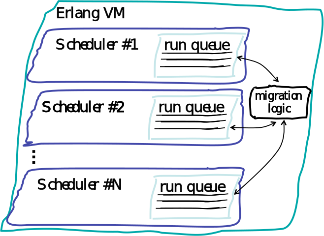

Functional Programming in Industry
Bob Ippolito (@etrepum)
High Tech Norway
June 17, 2015
bob.ippoli.to/fp-htn-2015
Who am I?
- Self-taught programmer
- Open source contributor (Python, JS, Erlang, Haskell)
- Entrepreneur (past: Mochi Media, Pieceable)
- Angel Investor & Startup Advisor
- Current Projects: Mission Bit
Mission Bit

- 501c3 non-profit in San Francisco
- Free after-school coding classes
- High school and middle school
- Taught by volunteer tech professionals
- Also: summer internships, company visits, hacker lab, etc.
- missionbit.com
Imperative Programming
In computer science terminologies, imperative programming is a programming paradigm that describes computation in terms of statements that change a program state.
Functional Programming
In computer science, functional programming is a programming paradigm—a style of building the structure and elements of computer programs—that treats computation as the evaluation of mathematical functions and avoids changing-state and mutable data.
Clarifications
- The important part is the programming abstraction, of course every runtime computation is using mutability somewhere
- Is a style of programming, can be done in any language
- Often easier or more efficient to use a language designed for FP
Popular Languages for FP
- Scala (JVM)
- Haskell
- Clojure (JVM)
- Erlang
- OCaml
- F# (CLR)
- Elixir (Erlang VM)
Scala Usage
- Opower
- Coursera
Haskell Usage
- Finance (JP Morgan, Standard Chartered, Barclays, …)
- Microsoft
- IMVU
- Janrain
- Galois
Erlang Usage
- Telecom (Ericsson, Nokia, AT&T, …)
- Cloud (Heroku, Chef, VMWare, …)
- Advertising (AdRoll, OpenX, AdGear, AOL, …)
- Messaging (WhatsApp, TigerText, 2600hz)
- Gaming (Machine Zone, Spilgames, Wooga, …)
- Finance (Klarna, Smarkets)
Erlang Success Stories
- Machine Zone (2014, ~$3B valuation, Game of War!)
- WhatsApp (2014, $22B acquisition by Facebook)
- Tail-f (2014, $175M acquisition by Cisco)
- Cloudant (2014, acquired by IBM)
- Mochi Media (2010, $80M acquisition by Shanda Games)
- Heroku (2010, $212M acquisition by Salesforce)
- Bluetail (2000, $152M acquisition by Nortel)
Caveat Emptor
Using Erlang will probably not make you rich!
… but JavaScript probably isn't doing you any favors either ;)
Popularity Cons
- Fewer learning resources available
- Unlikely to find a fancy IDE (unless Emacs counts)
- Fewer programmers available, may be harder to hire
… but you may find better ones (Blub Paradox) - Fewer open source libraries available
… but maybe you waste less time on bad ones ;)
Technical Cons
- Garbage Collection is basically a hard requirement
… but unless you're still using C++, this is status quo - Pure algorithms may have an extra
norlog ntime cost
… but there's usually a way to cheat - Shared state (e.g. configuration) can be cumbersome
… but globals are bad practice anyway
Pre-History
- 1930s-1950s
- Lambda Calculus (Turing)
- Combinatory Calculus (Curry & Feys)
- LISP (McCarthy)
- 1960s-1970s
- Operational (Landin) and Denotational (Strachey) semantics
- ML (Milner)
- Lazy FP & Graph Reduction (Turner)
- 1980s
- Miranda (Turner)
- Lazy ML (Augustsson & Johnsson)
Abbreviated History
- 1987
- Erlang experiments at Ericsson's R&D lab
- Haskell committee formed
- 1990
- Haskell 1.0
- 1998
- Erlang open sourced
- 2004
- Scala public release
- 2007
- Clojure public release
Why so long?
- Compiling FP style code to efficient machine code is a harder problem than adding layers of abstraction to how the machine already works.
- FP languages haven't had as many corporations pushing their adoption.
Why now?
- The imperative languages we have are a mess.
- Particularly with regard to concurrency and parallelism.
- Even embedded devices are multi-core today.
- FP can make multi-core and distributed systems easier to build.
Pros
- Code is more declarative; what to do, not how to do it.
- Erlang and Haskell have cheap concurrency, no more callback spaghetti.
- Erlang was designed for uptime. Introspection, resiliency and upgrade paths are built-in.
Declarative
Describe the problem, not the solution.
# merge_sort.py
def merge_sort(lst):
if not lst:
return []
lists = [[x] for x in lst]
while len(lists) > 1:
lists = merge_lists(lists)
return lists[0]
def merge_lists(lists):
result = []
for i in range(0, len(lists) // 2):
result.append(merge2(lists[i*2], lists[i*2 + 1]))
if len(lists) % 2:
result.append(lists[-1])
return result
def merge2(xs, ys):
i = 0
j = 0
result = []
while i < len(xs) and j < len(ys):
x = xs[i]
y = ys[j]
if x > y:
result.append(y)
j += 1
else:
result.append(x)
i += 1
result.extend(xs[i:])
result.extend(ys[j:])
return result-module(merge_sort).
-export([merge_sort/1]).
% bottom-up merge sort
merge_sort([]) ->
[];
merge_sort(L) ->
iterate([[X] || X <- L]).
iterate([Xs]) ->
Xs;
iterate(Lists) ->
iterate(merge_lists(Lists)).
merge_lists([Xs, Ys | Rest]) ->
[merge2(Xs, Ys) | merge_lists(Rest)];
merge_lists(Lists) ->
Lists.
merge2(Xs=[X | _], [Y | Ys]) when X > Y ->
[Y | merge2(Xs, Ys)];
merge2([X | Xs], Ys) ->
[X | merge2(Xs, Ys)];
merge2([], Ys) ->
Ys.module MergeSort (mergeSort) where
-- | Bottom-up merge sort.
mergeSort :: Ord a => [a] -> [a]
mergeSort = mergeAll . map (:[])
where
mergeAll [] = []
mergeAll [xs] = xs
mergeAll xss = mergeAll (mergePairs xss)
mergePairs (a:b:xs) =
merge a b : mergePairs xs
mergePairs xs = xs
merge as@(a:as') bs@(b:bs')
| a > b = b : merge as bs'
| otherwise = a : merge as' bs
merge [] bs = bs
merge as [] = asErlang has convenient bit syntax for parsing binary data
%% This parses a TCP packet header (IPv4)!
<< SourcePort:16, DestinationPort:16, SequenceNumber:32,
AckNumber:32, DataOffset:4, _Reserved:4, Flags:8,
WindowSize:16, Checksum:16, UrgentPointer:16,
Payload/binary >> = Segment,
OptSize = (DataOffset - 5)*32,
<< Options:OptSize, Message/binary >> = Payload,
<< CWR:1, ECE:1, URG:1, ACK:1, PSH:1,
RST:1, SYN:1, FIN:1>> = <<Flags:8>>,
%% Can now process the Message according to the
%% Options (if any) and the flags CWR, …, FIN etc.Cheap Concurrency
- Immutable data is lock-free, no deadlocks if there are no locks.
- <3 KB minimum per thread (process in Erlang terminology)
- High performance IO multiplexing built-in
- Can have millions of threads, even more than one per socket
RAM footprint per unit of concurrency (approx)
| 1.3KB |
|
| 2.6 KB |
|
| 8.0 KB |
|
| 64.0 KB |
|
| 64.0 KB |
|
| 1 MB |
|
| 8 MB |
|
Multi-core
- One scheduler per core, scales well to 32+ cores
- Better scalability to more cores is in-progress
- Schedulers understand IO (disk, network calls)
- No implicit synchronization

%% Parse HTTP headers from Socket
headers(Socket, Request, Headers) ->
ok = inet:setopts(Socket, [{active, once}]),
receive
{http, _, http_eoh} ->
%% All of the HTTP headers are parsed
handle_request(Socket, Request, Headers);
{http, _, {http_header, _, Name, _, Value}} ->
headers(Socket, Request, [{Name, Value} | Headers]);
{tcp_closed, _} ->
exit(normal);
_Other ->
%% Invalid request
exit(normal)
after ?HEADERS_RECV_TIMEOUT ->
exit(normal)
end.Per-process heaps
- No sharing
- GC is per-process, and not "stop the world"!
- Process references do not prevent GC
- Explicitly hibernate idle processes for compaction
No More Async Callbacks
- Only reason to use async is because threads are expensive
- With cheap pre-emptive threads, you can write straightforward and performant code without inverting the control flow
- Erlang exceptions propagate along linked processes
RPC with a Counter process
Counter ! {self(), {add, 1}},
receive
{Counter, {result, N}} ->
io:format("~p~n", [N])
end.RPC with a Counter process
{result, N} = gen_server:call(
Counter,
{add, 1}).Resiliency
- The Erlang mantra is "let it crash", don't try and handle every unexpected exception
- If a process dies, all of its linked ports and processes also receive an exit signal (which will free any resources such as sockets)
- At the top of the tree, a supervisor receives this signal and may restart the process or group of processes
- Since processes are isolated with no shared mutable data, this is safe and predictable!
Introspection
- Can get an Erlang shell any networked node
- Tracing makes it possible to investigate production internals
- Great SNMP support
- Very good libraries for monitoring/logging/etc.
Uptime
- Upgrade services on the fly with hot code loading
- It's not possible to have a truly reliable system that runs on a single server, so Erlang has first class distributed support
- With a few caveats, communicating from process to process between separate Erlang nodes is seamless. Works with the same syntax and libraries!
Not for Everyone
- No language is great at everything! Consider a polyglot approach (but don't drive yourself insane with microservices).
- Learning a new language takes patience, and you will make more mistakes at first.
- When you make mistakes, you should ask for help. Mailing lists, IRC, Twitter, Slack, StackOverflow, etc. can save your project.
Learn More (Erlang)
Learn More (Haskell)
- Books
- Learn You a Haskell for Great Good
- Parallel and Concurrent Programming in Haskell
- Haskell Programming from First Principles
- Real World Haskell
- Lectures
- Functional Systems in Haskell - CS240h 2011, Stanford
- Introduction to Haskell - CS1501 Spring 2013, UVA
- Introduction to Haskell - CIS 194 Spring 2013, UPenn
- Haskell Track - CS 11 Fall 2011, Caltech
- Practice
- exercism.io, Talentbuddy, HackerRank
- H-99, Project Euler
Thanks!
Slides |
|
Source |
|
bob@redivi.com |
|
Related |
bob.ippoli.to/intro-to-erlang-2013 |